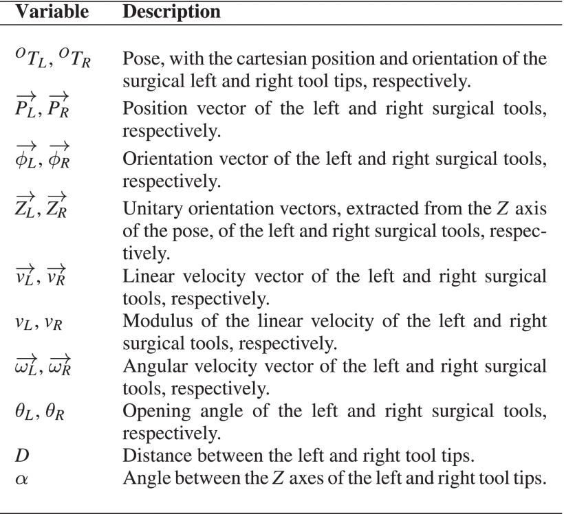

Results of the Feature Selection

Accuracies of different model configurations

Accuracies for models based on one HMM per gesture.
Accuracies for models based on one HMM for the whole suturing manoeuvre.
Accuracies for the models based on MLP.
Difference in accuracies with the complete and reduced sets of variables
Difference in accuracy per trained model configuration between complete and reduced sets of variables for one HMM for each gesture.
Difference in accuracy per trained model configuration between complete and reduced sets of variables for one HMM for the suturing manoeuvre.
Difference in accuracy per trained model configuration between complete and reduced sets of variables for the MLP model.
BibTeX
@ARTICLE{10799090,
author={Herrera-López, Juan M. and Galán-Cuenca, Álvaro and Reina, Antonio J. and García-Morales, Isabel and Muñoz, Víctor F.},
journal={IEEE Access},
title={Laparoscopic Suture Gestures Recognition via Machine Learning: A Method for Validation of Kinematic Features Selection},
year={2024},
volume={12},
number={},
pages={190470-190486},
keywords={Surgery;Kinematics;Needles;Hidden Markov models;Robots;Data models;Laparoscopes;Data mining;Image recognition;Vectors;Feature selection;hidden Markov models;laparoscopic suturing;neural networks;surgical gestures recognition;surgical robotics},
doi={10.1109/ACCESS.2024.3516949}}